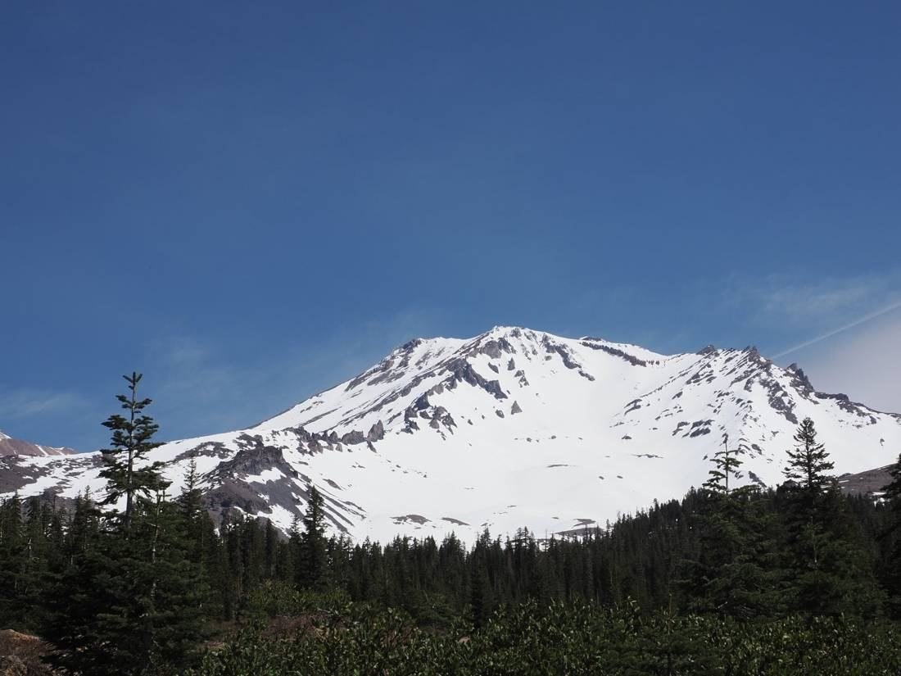
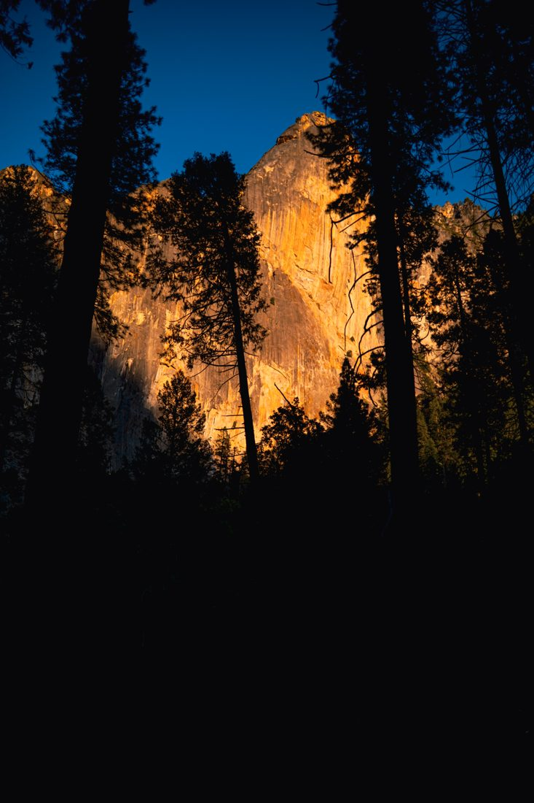
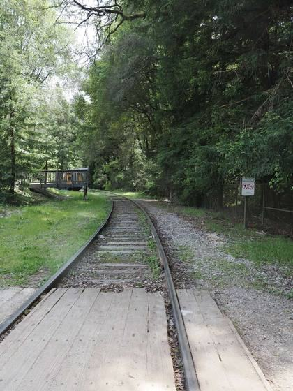
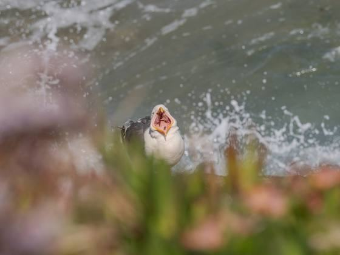
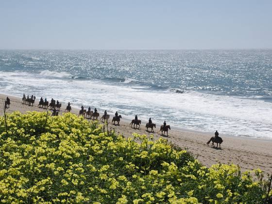
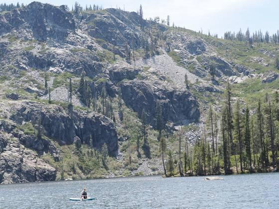
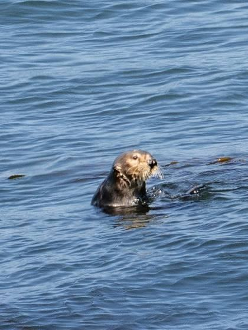
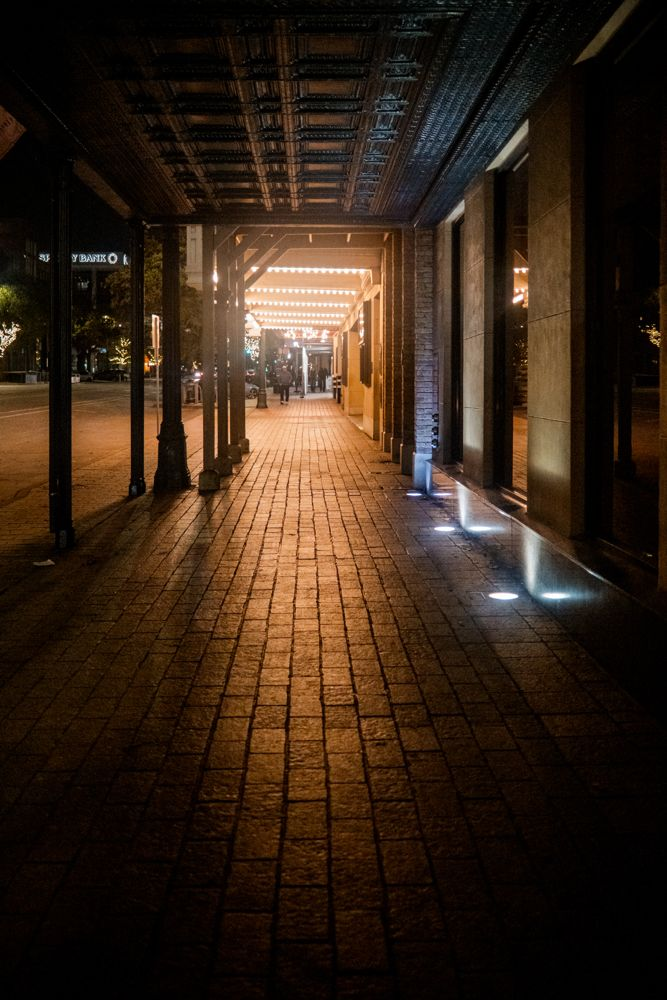
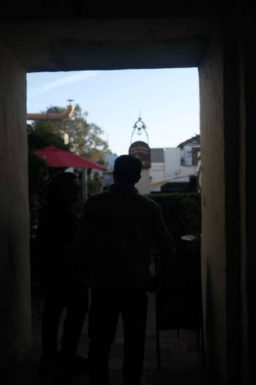
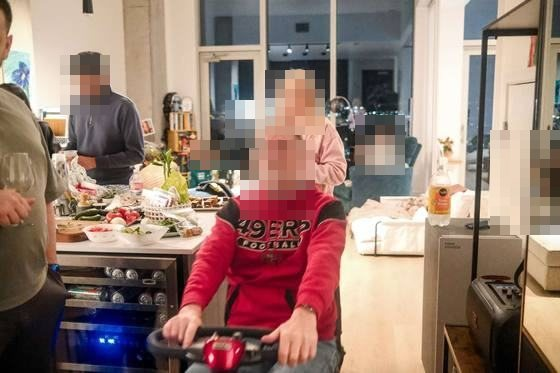

The meter is guessing, and you can predict its error
A reflected-light meter has no way to know how bright a scene is. Every exposure mistake it makes follows from the single assumption it uses to cover that ignorance — which means every mistake is predictable, and correctable with a number.
X100VI §03 Metering · OM-1 §03 Metering
Point a camera at a white wall in dim light and at a grey wall in bright light, and the light arriving at the sensor can be identical. The meter measures only reflected luminance — photons coming back — so those two scenes are indistinguishable to it. It cannot solve for both the illumination and the reflectance of what it sees; there is one measurement and two unknowns.
So it assumes one of them. It assumes the scene averages to a fixed reflectance and sets exposure to render the measurement at that value. The number is usually quoted as 18% grey, which is darkroom folklore; the ISO standard for exposure meters defines a calibration constant that works out closer to 12–13% reflectance. The exact figure matters less than the consequence: whenever the real scene reflects more or less than that, the meter is wrong, in a known direction, by an amount you can estimate in stops.
Snow reflects around 80–90%. That is roughly two and a half stops brighter than the assumption, so a meter pointed at a snowfield will stop down by about that much and render it grey. Not a malfunction — a correct answer to the wrong question.

RepairedWhat the meter did hover or tapThe metering modes are different sampling strategies
Matrix or ESP metering samples the whole frame and applies pattern recognition to guess the scene type. Centre-weighted biases toward the middle. Spot reads about 2% of the frame and ignores everything else. The under-taught detail is that spot metering measures a fixed angle, so the real-world patch it covers scales with focal length: on a 300mm-e lens the spot lands on a bird’s breast, while on a 24mm-e lens the same 2% swallows an entire building. Spot metering gets more precise as you go longer, and is nearly useless wide.
Olympus’s Spot HI and Spot SH are the useful refinement: rather than placing the metered patch at mid-grey, they place it near the top or bottom of the tonal range. That is zone placement built into a button — you are telling the camera not just where to measure but what that thing should be.
| What fills the frame | Reflectance vs assumption | Meter will | Dial |
|---|---|---|---|
| Snow, sand, white wall, fog | ~80% — far above | Underexpose, render white as grey | +1⅓ to +2 EV |
| Average landscape, mixed scene | ~15% — close | Be about right | 0 EV |
| Dark foliage, night street | ~4% — far below | Overexpose, lift black to grey | −1 to −2 EV |
| Backlit subject against sky | bimodal — no average is right | Split the difference, ruin both | Spot the subject, or choose |
Why the highlights get protected and the shadows do not
A raw file records light linearly, and that has a consequence most exposure advice skips. In a 14-bit file with roughly 16,384 levels, the brightest stop of the range holds about 8,000 of them; the next stop down holds 4,000; the one after 2,000. By five stops below clipping, a whole stop of tonality is described by a few hundred levels.
stop 1 → ~8192 levels · stop 5 → ~512 · stop 9 → ~32
Two things follow. First, clipped highlights contain no recoverable data at all — the values saturated, and nothing in any editor reconstructs them. Second, shadows do contain data, but very little of it, so lifting them amplifies quantisation and read noise along with the signal. That asymmetry is the whole argument for exposing to the right, and for the approach in the frame below: decide what you are willing to lose, protect the other end, and let the loss happen deliberately.

One practical caveat about the tool you use to check this: the histogram and the blinking highlight warning are computed from the embedded JPEG preview, not from the raw data. The raw file typically holds another ⅓ to 1 stop of headroom beyond where the blinkies start. So the warning is conservative — useful to know when you are deliberately pushing exposure right, and useful to know when a bright red or deep blue starts blinking, because a single saturated channel clips long before overall luminance does.
Before pressing, ask what fills the frame and whether it is brighter or darker than a mid-grey card. If it is, the meter is already wrong and you know the direction. Dial the compensation, then confirm on the histogram — a middle hump while you are looking at snow is the mismatch made visible. For a small bright subject in a dark surround, use spot, and use it long rather than wide.
Depth of field is arithmetic, not taste
Most composition devices — leading lines, foreground screens, layered bands, scale contrast — are depth-of-field problems with numeric answers. Two formulas and one physical limit cover nearly all of them.
X100VI §11 Composition · OM-1 §10 Techniques · §01 Format
A lens focuses at exactly one distance. Everything else is a blur circle, and “sharp” simply means the circle is smaller than we can resolve at normal viewing — the circle of confusion. Because it is defined relative to the final image, it scales with sensor size: about 0.015 mm on Micro Four Thirds, 0.02 mm on APS-C. Every depth-of-field number depends on that choice, which is why the same lens and aperture behave differently across formats.
hyperfocal distance — focus here, and everything from H/2 to infinity is acceptably sharp
That formula does more work in the field than any compositional maxim. A leading line has to be sharp where it enters the frame, which is usually a metre or two away, and simultaneously at the far end. That sounds like a case for stopping right down. Run the numbers and it usually is not.

Separation is a ratio problem, so move your feet
How thoroughly an out-of-focus plane dissolves depends on how far it sits outside the focused distance relative to that distance — not on aperture alone. A foreground object at one-tenth the subject distance melts completely at almost any aperture. This is why shooting through grass or blossom works so reliably, and why it does not require a fast lens.

Equivalence: the crop factor converts more than framing
The OM-1’s sensor is 17.4×13 mm against the X100VI’s 23.5×15.6 mm — crop factors of 2× and 1.5× against full frame. Everyone knows this converts focal length. It also converts depth of field and total light gathered, by the same factor applied to the f-number. For the same framing, f/2.8 on Micro Four Thirds renders roughly like f/5.6 on full frame: twice the depth of field, and about two stops less total light on the sensor.
Neither half of that is a defect — it is the trade the format makes, and it explains the pattern in the settings throughout this page. The OM-1 frames sit at f/5.6–f/11 and hold from foreground to horizon at apertures where a larger sensor would need to be two stops further down. The X100VI lives at f/2 indoors because it needs to.
The ceiling: diffraction
Closing the aperture eventually destroys what it was meant to protect. Light passing an aperture spreads into an Airy pattern whose central disc has a radius of about 1.22 λN. In green light at 550 nm that is roughly 3.8 µm at f/5.6 and 7.4 µm at f/11. Both bodies here have a pixel pitch near 3 µm — so by f/11 a point source is already smeared across several pixels, and no lens quality recovers it.
| Lens · aperture | Hyperfocal | Sharp from → to | Note |
|---|---|---|---|
| 14mm f/5 · m43 | 2.6 m | 1.3 m → ∞ | Well clear of diffraction |
| 40mm f/8 · m43 | 13.4 m | 6.7 m → ∞ | Practical floor for this format |
| 40mm f/11 · m43 | 9.7 m | 4.9 m → ∞ | Buys 1.8 m of near limit, costs resolution |
| 23mm f/8 · APS-C | 3.3 m | 1.7 m → ∞ | Classic zone-focus setting |
| 23mm f/2 · APS-C | 13.3 m | 6.6 m → ∞ | Wide open still covers a street |

Where the rules invert at high magnification
Close to 1:1 the arithmetic changes character. Depth of field is measured in millimetres, and the effective aperture darkens as the lens extends: Neff = N × (1 + m), so at 1:1 magnification a marked f/5.6 behaves optically like f/11 — two stops of light lost, and diffraction arriving two stops earlier than the barrel suggests. The correct response is still to stop down, because at that scale insufficient depth destroys a frame faster than softening does, but you should know you are already at the ceiling.

Decide which planes must be sharp before choosing an aperture, then compute rather than guess. Default to the lens’s sharp middle — f/4–f/5.6 on Micro Four Thirds — and stop down only when the hyperfocal arithmetic says you must. Past f/8 you are buying depth with resolution. And when you want separation, change your distance to the foreground before you change the aperture: the ratio does more than the f-number.
Blur has two causes and only one of them is fixable by the camera
Camera shake and subject motion look identical in a thumbnail and have completely different cures. Stabilisation solves the first entirely and the second not at all. Reading which one you face sets the shutter floor.
OM-1 §07 Stabilisation · §04 Autofocus · X100VI §10 Techniques
Camera shake is angular: a small rotation of the body sweeps the projected image across the sensor by an amount proportional to focal length. That proportionality is the origin of the reciprocal rule — shutter at 1/focal-e — which was calibrated for film and handheld technique, not physics, but holds up as a starting point. Stabilisation attacks this directly by moving the sensor to cancel the measured rotation, and modern systems claim six to eight stops of correction.
Subject motion is a different quantity entirely. It depends on how fast the subject crosses the frame, which is why a bird flying toward you blurs far less than one crossing at the same speed, and why the same walking pace needs a faster shutter at 300mm-e than at 24mm-e. No sensor movement can cancel it, because the sensor cannot move differently for different parts of the image.
| Subject | Subject floor | Binding constraint | Evidence below |
|---|---|---|---|
| Architecture, landscape, sleeping | none | Shake only — spend the IBIS stops | 1/15 · 1/20 |
| Seated person, between sentences | ~1/30 – 1/60 | Micro-movement | 1/30 at ISO 200 |
| Gesture, laughter, walking | 1/125 – 1/250 | Subject — IBIS irrelevant | 1/34, shot in numbers |
| Animal head, bird in flight | 1/640 – 1/2000 | Subject, strongly | 1/640 · 1/800 |
The practical value of separating them is that a still subject converts stabilisation stops directly into image quality. A worked case from the catalogue (a family frame, so it stays off this page): a sleeping child carried on a shoulder, window light only — 15mm · f/2.8 · 1/15 · ISO 400. That shutter is a stop below the reciprocal rule and trivial for IBIS, and because a sleeping child is genuinely motionless it bought ISO 400 instead of the ISO 3200 a “safe” 1/125 would have forced: three stops of noise, saved by correctly reading the subject. The moment the head turns, the frame is gone and no setting recovers it — which is why this technique is always paired with several exposures.
Stabilisation has limits worth knowing. It corrects rotational shake best; the lateral shift that dominates at close focusing distances is much harder, which is one reason macro work demands a fast shutter despite excellent IBIS. And CIPA ratings assume decent technique — bracing, exhaling, squeezing rather than stabbing, firing a short burst and keeping the middle frames is worth another stop or two on top of whatever the specification promises.

ISO is not exposure
Aperture and shutter determine how many photons reach the sensor. ISO does not — the photons are already caught, and ISO is amplification applied afterwards. That is why it belongs last in the decision order, and also why raising it is far less costly than the folklore suggests: modern sensors are close to ISO-invariant over much of their range, meaning a correctly exposed high-ISO frame and an underexposed low-ISO frame lifted in software end up in a similar place. Given that, refusing to raise ISO buys nothing and risks the shutter speed that actually matters.

Name the motion before choosing the shutter. If the subject is static, drop to your measured stabilisation floor and take the ISO back. If the subject moves, set the shutter from the table and let ISO go wherever it must — a clean photograph of a blurred gesture is still a failed photograph. And when the required floor is unreachable, say so to yourself and shoot a burst deliberately, rather than taking one frame and hoping.
Light has four properties; exposure is only one
Quantity is what the meter measures. Direction, quality and colour are what make the photograph — and all three are controlled by where you stand, not by any setting.
X100VI §07 Colour · §13 Scenes · OM-1 §12 Missions
Quality — hard or soft — is governed by the apparent size of the source relative to the subject, and by nothing else. The sun is enormous and 150 million kilometres away, so it subtends half a degree and casts hard-edged shadows. Put cloud in front of it and the whole sky becomes the source: shadows soften because light now arrives from many angles. A window behaves the same way. Standing a person close to it makes it large in their sky and the light soft; moving them back across the room shrinks it toward a point source and hardens every shadow. Distance from the window is a lighting modifier that costs nothing.
That falloff is also steep, and predictable: illumination drops with the square of distance. Move a subject from one metre to two metres from a window and they lose two stops. Within a small room this is the strongest contrast control available — a step sideways changes the ratio between lit and shadow side more than any camera setting will.

Colour is where cameras most often erase the thing worth photographing. Household tungsten sits near 2800 K, overcast daylight near 6500 K, and a room containing both is a room with two palettes. Auto white balance is designed to neutralise exactly that — it computes a single correction and averages the difference away. Fixing white balance to one source instead preserves the contrast between them.
Golden hour is the same physics on a planetary scale. Near the horizon, sunlight traverses a far longer path through atmosphere; Rayleigh scattering removes the short wavelengths, leaving the warm remainder. The light is also low, so it rakes across surfaces and models texture instead of flattening it. Both effects are geometric, which is why the hour cannot be simulated with a slider — the shadows would be in the wrong place.
The missing tool
Everything above adapts to light that already exists. The other option is to add some — and here the X100VI has a genuine structural advantage. A focal-plane shutter exposes the frame through a travelling slit, so above roughly 1/250 the sensor is never fully uncovered and a flash can only illuminate part of it. A leaf shutter opens and closes as a whole, so it synchronises at speeds up to 1/2000 (aperture dependent).
That single fact enables daylight fill: set 1/2000 at f/2, expose the background two stops down, and let the flash carry the subject. On a focal-plane camera the same thing needs a much smaller aperture and a much larger flash. No frame in this catalogue demonstrates it, which is why it is assignment 04.
Before adjusting the camera, walk. Change the angle between the source, the subject and yourself; move the subject nearer the window or further from it. Ask whether the light is hard or soft and why — how big is the source from where the subject stands. Fix white balance when two colours of light are the point. Every one of these is free, and each changes the photograph more than any setting.
The decision no setting can make
Everything so far is solvable arithmetic. This one is not — and your settings record whether you made it.
X100VI §13 Scenes · OM-1 §12 Missions
There is a diagnostic hiding in the metadata. Every frame in the previous lessons has at least one setting that is specific to its subject — 1/640 because the otter’s head turns, f/11 because three planes must resolve, ISO 400 because the child is asleep. The setting is a fossil of a decision.
Which means the reverse is also readable. When a frame’s settings are unremarkable in every dimension, usually no decision was made — the camera chose a competent middle and the photographer accepted it.
This matters because of a distinction that runs through the whole page. Almost every failure discussed so far is a redistribution problem — tone in the wrong place, colour averaged away, contrast misjudged — and a raw file absorbs a surprising amount of redistribution. A missing subject is an information problem. The low angle was never recorded. The boat never crossed. There is no bit depth at which that data exists.
The same logic explains why famous viewpoints are difficult rather than easy. At a landmark the subject, the position and often the hour are fixed and shared with everyone else standing there. What remains under your control is focal length and precise position — which is to say, which optical device you brought.
Before pressing, answer out loud: what is this a photograph of? Then check that at least one setting is specific to that answer. If nothing in the exposure would change had the subject been something else in the same scene, you have not chosen yet. Read your own metadata back occasionally — it is an honest record of how many decisions you actually made.
Rooms full of people: every constraint at once
Indoor events combine low light, moving subjects, mixed colour temperature and no second chance. The technical work must be finished before you walk in.
X100VI §13 Scenes · OM-1 §04 Autofocus
Every lesson above applies simultaneously here, and the shutter floor is the one that binds. Gesture needs 1/125 or better; a typical indoor room, wide open, offers something closer to 1/30. That gap of two stops is the entire technical problem of event photography, and it cannot be closed at the moment it matters — which is why the configuration happens at the door.
Aperture wide (f/2 on the X100VI, f/1.8–2.8 on a fast prime). Auto-ISO on, ceiling raised to 12800, minimum shutter pinned to 1/125 — that floor comes from the subject, not the focal length. White balance fixed rather than auto so the room stays one colour all evening. Face and eye detection enabled. Silent shutter if the body offers one. After that, the only remaining decisions are where to stand and when to press.
Depth of field then does the compositional work. At 35mm-e and f/2 with a subject two metres away, the zone of sharpness spans roughly a metre — enough that immediate context resolves while people further back soften into tone. One legible layer of room is the target: wider erases the venue and you lose the story, stopping down brings a second layer into focus and the frame becomes clutter.

Set the camera at the door and then stop thinking about it. Inside, work only on position and timing: where the light is, how much room stays legible behind your subject, and where the gesture is heading. When you are under the shutter floor, know it and shoot in numbers — that is technique, not luck, provided it is deliberate.
Working a scene, and what can never be recovered
Several frames of one moment is method rather than indecision — provided each frame changes exactly one variable, and provided you choose the winner while you can still take another.
Ten frames at identical settings are one guess repeated ten times. Ten frames that step through position, focal length, plane of focus and moment are ten answers to different questions, and whichever you keep tells you which question was the right one. That is how every rule on this page was derived, and how you would derive one it does not contain.
Vary them in order of leverage. Position first — it changes the distance ratios, the background, the light angle and the perspective all at once. Then focal length, which changes compression and how much context survives. Then the moment, which changes gesture. Then aperture, which is the variable most people reach for first and which alters the least.
The reason to settle the winner before developing anything comes back to the distinction from Lesson 05. Redistribution problems — tone, colour, contrast, local adjustment — a raw file absorbs. Information problems do not exist in the file at any bit depth: the angle you did not take, the plane you did not focus on, the moment you did not wait for. The cheap moves all happen before the shutter; after it, you are only ever rearranging what you already caught.
Assignments
Each one is designed to make a rule above fail, so you learn where its boundary sits on your own equipment rather than taking a published number on trust.
- Find your shake floor. One static subject, five frames at every shutter speed from 1/60 down to 1/4 at fixed focal length. Note where sharpness collapses. That is your stabilisation figure — use it for every low-light decision afterwards. OM-1 §07 · X100VI §10
- Find your diffraction ceiling. Tripod, one flat detailed subject, every aperture from wide open to minimum, compared at 100%. Resolution will rise then fall; the peak is your default aperture and the fall is what stopping down actually costs. OM-1 §09
- Verify the meter table. A white subject and a black subject on one afternoon. Shoot each at EV 0, then at the prescribed compensation, then compare histograms. Confirm the direction and size of the error yourself. OM-1 §03 · X100VI §03
- The leaf shutter. Daylight fill at f/2 · 1/2000 — background two stops down, flash carrying the subject. Then slow-sync at dusk. Keep the failures; they map where sync really stops on this body. X100VI §05
- Isolate subject motion. One walking person, constant light, shutter from 1/30 to 1/500. Find where the feet stop smearing — and note that stabilisation helps at none of them. Lesson 03
- One scene, one variable per frame. Ten frames changing position, then focal length, then moment, then aperture, in that order. Write one line on why the winner won. If the reason is not a variable you changed, take ten more. above